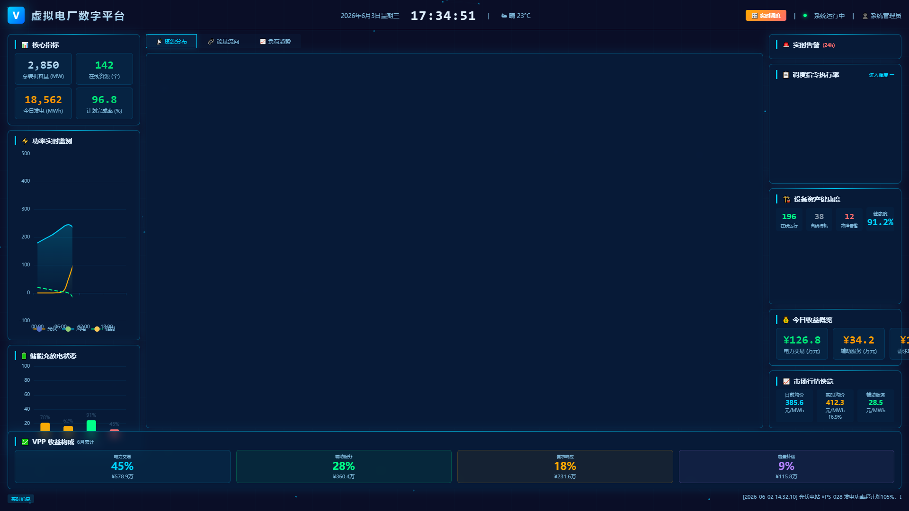
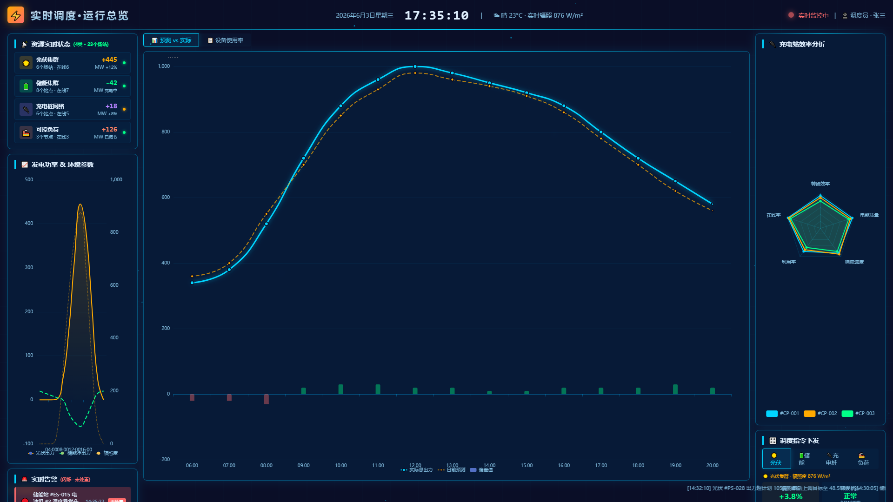
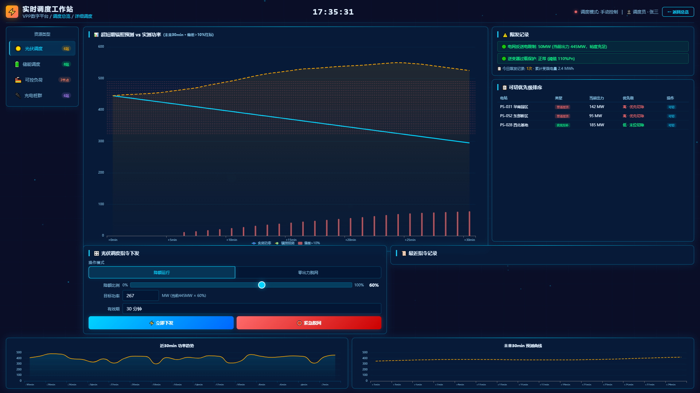
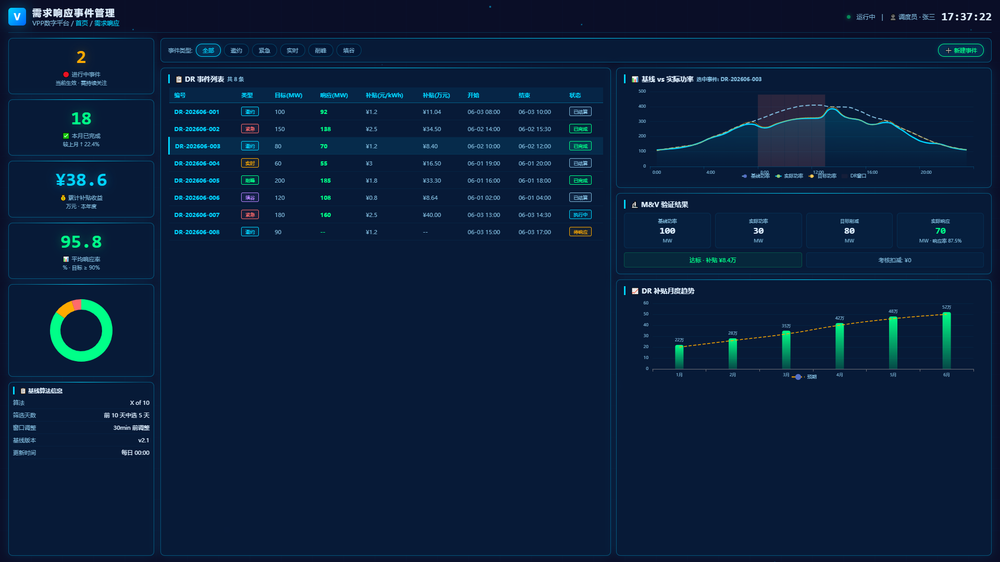
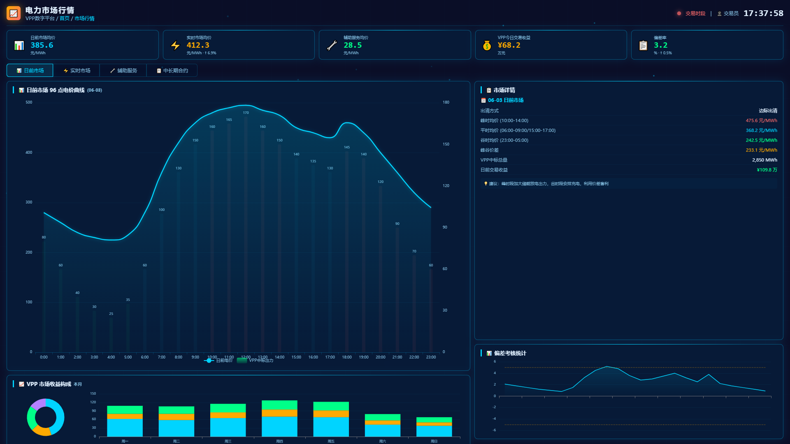
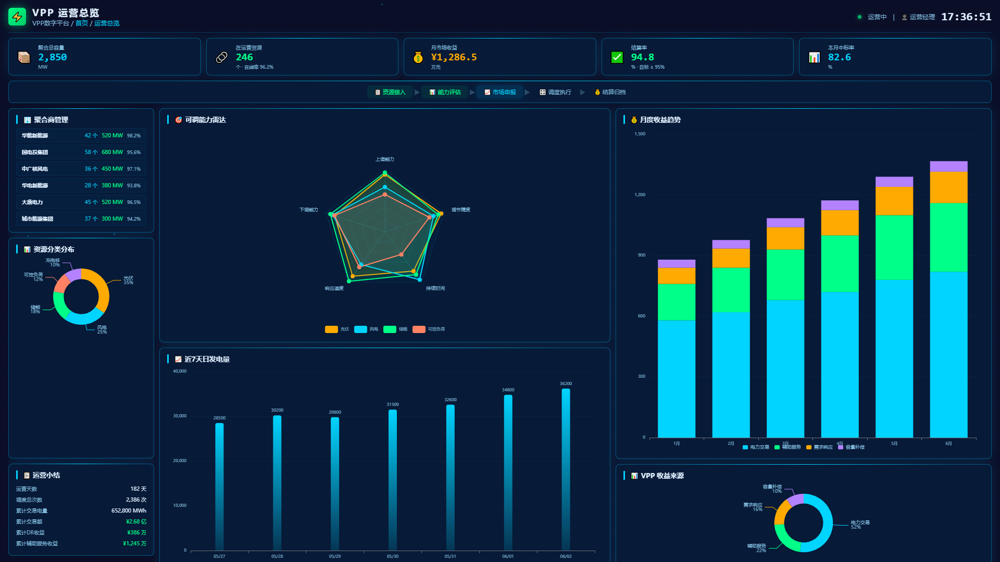
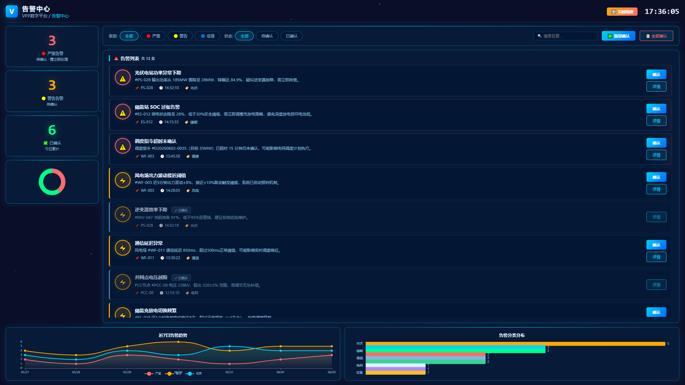
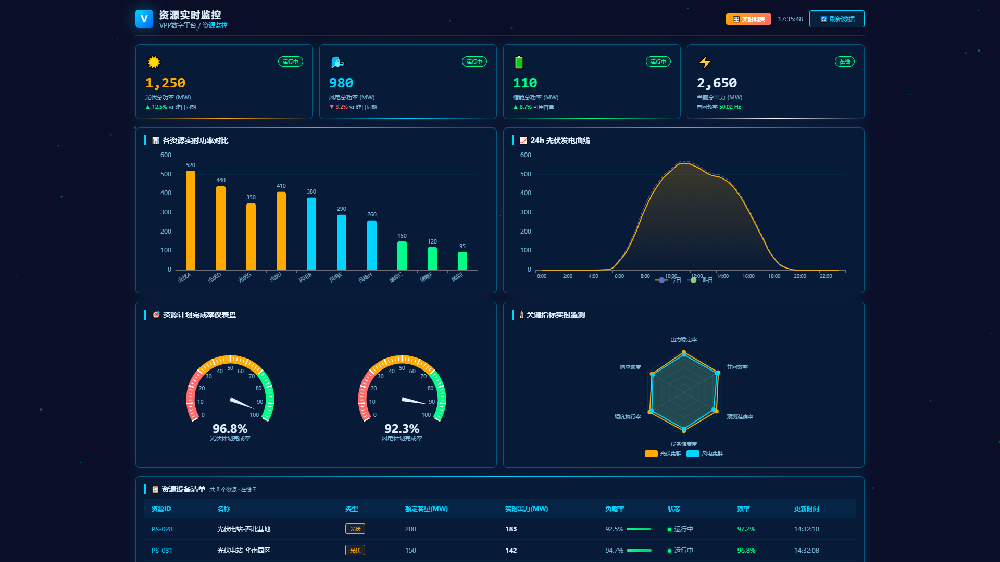

PORTFOLIO
VPP 虚拟电厂平台
虚拟电厂运营管理 · 数字大屏 · 全流程闭环
产品需求文档（PRD）· UI 设计说明
DataV 数字大屏 · 6 大业务模块 · 11 个页面
技术栈：HTML5 / ECharts 5.5 / CSS3 DataV 风格
参考标准：GB/T 40613-2021 / GB/T 44241-2024
📋 项目概览
🎯 项目定位
面向聚合商、电网调度、交易中心的 VPP 核心运营平台，完整覆盖资源聚合 → 能力评估 → 市场参与 → 调度执行 → 结算归档的全运营闭环。
👥 用户角色
- 系统管理员（权限/审计）
- 聚合商运营（资源/运维）
- 电网调度（监控/指令/告警）
- 交易人员（报价/收益）
- 资源业主（数据查看）
- 财务（结算/对账）
🏗️ 系统架构
┌─────────────────────────────────────────────────────┐
│ ④ 应用层：电力市场交易 / 电网调度 / 需求响应 │
├─────────────────────────────────────────────────────┤
│ ③ 平台层（VPP核心）：资源聚合 / 负荷预测 / │
│ 优化调度 / 市场交易 / 安全防护 │
├─────────────────────────────────────────────────────┤
│ ② 通信层：IEC 104 / MQTT / Modbus / DL/T 645 │
│ 纵向加密 / 主备冗余 / 断网续传 │
├─────────────────────────────────────────────────────┤
│ ① 资源层：光伏 / 风电 / 储能 / 充电桩 / 可控负荷 │
└─────────────────────────────────────────────────────┘
11 个页面 · 6 大功能模块
📊 调度与监控
调度大屏 · 资源监控 · 实时总览 · 告警中心
🎯 控制与执行
调度工作站 · DR事件响应 · 调频辅助服务
📈 电力市场
日前/实时/辅助服务/合约 · 偏差考核
💳 结算管理
DR结算 · 辅助服务结算 · 偏差考核结算
🔗 运营总览
聚合商管理 · 可调能力评估 · 收益分析
🔐 用户管理
登录注册 · 角色路由 · 验证码 · 错误锁定
技术栈
HTML5
CSS3 DataV
ECharts 5.5
Canvas 粒子
JavaScript ES6
响应式设计
CDN 部署
GB/T 40613-2021
GB/T 44241-2024
📺 调度大屏 Dashboard
全局态势感知页面。顶部 KPI 行展示实时总出力 / 可调容量 / 今日收益 / 活跃告警；左侧资源地图（ECharts 散点图）标记 5 类资源的地理分布与状态；右侧面板展示实时告警列表、调度执行率、设备健康度、今日收益概览（电力交易/辅助服务/DR 三列）、市场行情快览（日前/实时/辅助服务均价）；底部 VPP 收益构成 4 卡片（占比+金额）。

📋 实时调度总览
4 类资源（光伏/储能/可控负荷/充电桩）状态卡片 + 实时功率曲线（ECharts 多线图） + 调度效率雷达图 + 执行指令摘要。

🎯 实时调度工作站
核心交互页面。左侧四资源 Tab 切换：光伏（降额/脱网）· 储能（计划充放/紧急功率支撑 + 调频模式一次/二次/爬坡）· 可控负荷（柔性档位 + 需求响应 DR 模式邀约/紧急/实时 + 削峰填谷0~50MW 滑块）· 充电桩（站点选择/有序充电）。右侧功率曲线 + 历史指令记录 + 系统约束提示。

🔴 DR 模式
邀约 DR（提前4h·≥2h）
紧急 DR（即时·≥15min）
实时 DR（15min·≥30min）
含事件编号 / 补贴单价 / 响应量
🔄 调频模式
一次调频（≤30s·20MW）
二次调频 AGC（≤3min·30MW）
爬坡支撑（15MW/min·≥10min）
Kp 性能指标显示
📋 需求响应事件管理
DR 事件列表（邀约/紧急/实时/削峰/填谷 5 种类型色标）+ 基线算法面板（X of 10 / 前10天选5天 / 窗口调整30min）+ 基线 vs 实际功率曲线（24h，DR 窗口高亮）+ M&V 验证面板（基线功率/实际功率/响应量/响应率/考核结果）+ 补贴计算明细 + DR 月度趋势柱状图 + 响应率分布饼图。

📈 电力市场行情
四 Tab 切换：日前市场（24h 电价曲线 + 峰平谷标注 + VPP 中标出力）、实时平衡市场（15min 电价 + 偏差考核区间）、辅助服务市场（调频容量/里程/旋转备用/无功调压 4 条价格线）、中长期合约（月度价格 + 电量执行）。VPP 市场收益饼图 + 日度收益趋势堆叠柱状图。

🔗 VPP 运营总览
5 阶段可点击闭环流程图（资源接入→能力评估→市场申报→调度执行→结算归档）。左侧聚合商卡片（6 家）、资源分类饼图（光伏/风电/储能/负荷/充电桩）。右侧可调能力雷达图（4 资源×5 维度）、近7日发电量柱状图、月度收益堆叠柱状图（4 色）、VPP 收益来源饼图。
💳 结算管理
结算单列表（含结算类型色标：电力交易/辅助服务/DR/容量补偿）· 5 项占比饼图 · 月度收益趋势 · 结算明细 3 Tab（DR 基线vs实际曲线 / 辅助服务 4 类占比 / 偏差考核 7 日趋势图）

🚨 告警中心 · 📊 资源监控
告警：级别/状态/搜索筛选 · 单条/批量确认 · 7日趋势 · 分类饼图
资源监控：24h/7d/30d 历史曲线 · 双 Y 轴 · 仪表盘 · 状态指示器

